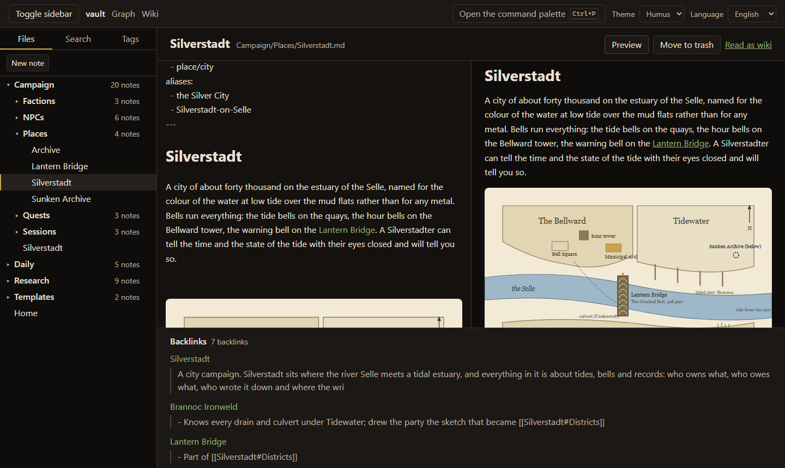
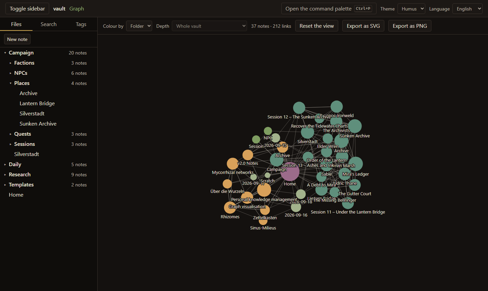
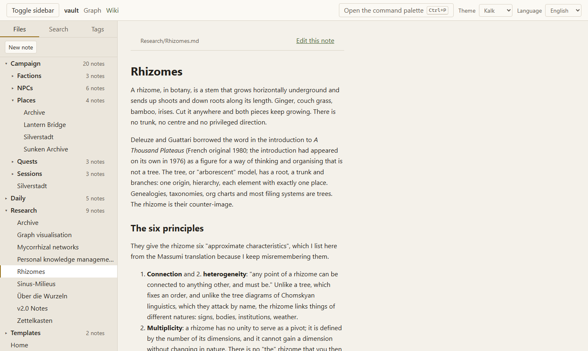

Open source · AGPL-3.0 · runs on your own machine
A wiki and a graph for
a folder of Markdown files.
Rhizom works on one folder of Markdown files. It indexes the links between the notes, draws the graph and serves the folder as a wiki. An existing Obsidian vault opens as it is.
Download Rhizom 0.2.0 View on GitHub
One package for Linux, macOS and Windows · 23 MB · needs Node 22.22 or newer. Or run it in Docker.
- 0 accounts, trackers, cloud services
- 1 folder of Markdown files is the whole format
- <100ms to search a vault of 5,000 notes
The idea
Files first
- The files are the source of truth. A vault is a folder of Markdown files. Any editor can open it, with or without Rhizom.
- The index is derived. SQLite holds only what can be rebuilt from the files: links, tags, frontmatter, full text. Delete it and it comes back.
-
An Obsidian vault opens as it is. Rhizom reads a folder of
.mdfiles with[[wikilinks]]directly. There is no import step and no conversion.
Screenshots
Three views of the same folder



Running it
Download, Docker, or from source
Point it at a folder of Markdown files (an existing Obsidian vault will do) and open
localhost:3737.
The download is one package for all three operating systems. It needs
Node 22.22 or newer: unpack it, then cd server and
node dist/server.js. The README.txt inside lists the
settings, and the checksum next to the download lets you verify it.
The SQLite index sits in its own folder and can be deleted at any time; your notes are not touched. Nothing leaves the machine: no telemetry, no account, no cloud service. The full quick start is in the README.
RHIZOM_VAULT=/path/to/your/vault docker compose upWhat it does
Here now, and what comes next
- Editor
- Here now
-
CodeMirror 6 with live preview,
[[autocomplete across the vault, a rendered pane beside the text, images by drag and drop, and a click on a missing link that creates the note. - Bubble graph
- Here now
- Bubble size is the number of links, colour comes from the folder or the tag. A local mode shows one note and its neighbours, any view exports as SVG or PNG, and the layout runs in a worker, so the page stays usable while it settles.
- Wiki mode
- Here now
- A read-only view of the whole vault with rendered links, navigation and search.
- Knowledge layer
- Here now
-
Definitions with an alphabetical glossary built from them, terms recognised wherever
they are mentioned,
![[transclusion]], block references, unlinked mentions, templates with a slash menu, and query blocks that answer from the index. Renaming a note or a tag rewrites every mention, after showing you what it would do. - Self-hosting
- Here now
- One Docker command, or a Node process on a machine you control. Installers for Windows, macOS and Linux come in Phase 5.
- Milieu axes
- Here now
- A second graph layout: two axes you name yourself, with the notes placed between them the way the Sinus-Milieu studies lay out a population. Drag a note and the position is written back into its frontmatter.
- D&D mode
- Phase 3, being built
- A module you switch on per vault: stat blocks, typed relationships between people and places, markers for what the players have been told, a view for them to read, dice and decks.
Who it is for
Four kinds of vault
- The self-hosting community. One container or one process on your own hardware. No third-party account, and nothing that phones home.
- Researchers. Sources, arguments and open questions as linked notes. The graph shows which of them hang together.
- Authors. Characters, places and plot threads as notes that link to each other, next to the manuscript.
- Game masters. A campaign as a vault. A D&D mode you switch on per vault is planned for Phase 3: NPC stat blocks, typed relationships, dice, and sections only the GM can see.
Status
Seven phases, three of them done
Phases 0 to 2 are done: you can open a vault, write, link, search, see the graph, and use the knowledge layer — definitions with a glossary, unlinked mentions, transclusion, block references, templates and live query blocks. Phase 3 is the D&D module.
- 0Foundation
- 1Write, link, see
- 2Knowledge layer and editor
- 3D&D mode
- 4Sharing, permissions, history
- 5Desktop and ecosystem
- 6Everything after
It is early. Keep a backup.
This is version 0.2.0, three of seven phases in. Your notes stay plain Markdown files, so you can stop using Rhizom at any time and still have them.